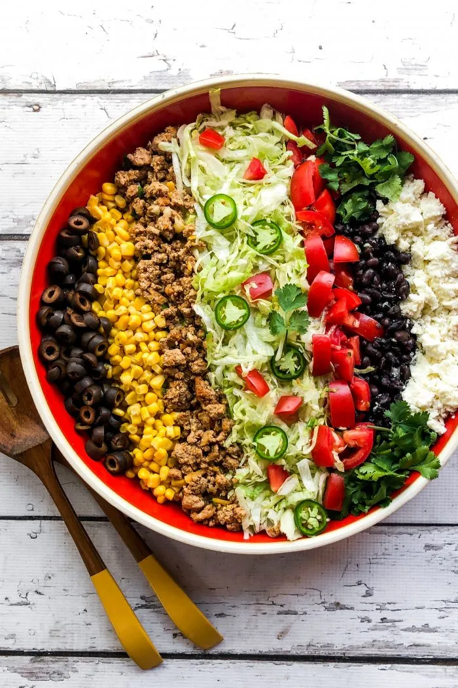

Home
Taco Salad

Simple taco salad is my go to meal prep for dinner most nights
Ingredients
- 1lb ground turkey
- 1 packet taco seasoning
- 1 can of black beans
<1i>1 bag hearts of romaine
- 3 oz of sharp cheddar
Steps
- Brown ground turkey and then mix in taco seasoning packet
- Measure 1/2 pound of cooked turkey
- Measure 5oz of black beans
- Measure 3 oz of cheddar cheese
- Heat in microwave 3 minutes to melt cheese
- Add handful of lettuce on top